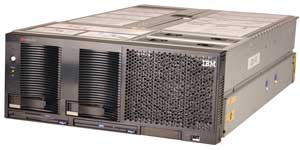
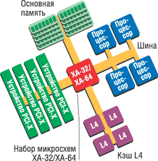
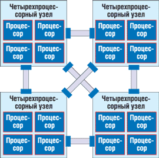
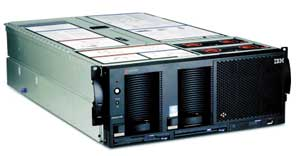

Алексей Борзенко,
к. т. н., доцент РТТА
Прошлой осенью корпорация IBM (http://www.ibm.com) объявила о стратегической инициативе, призванной сделать мэйнфреймы краеугольным камнем бизнеса по требованию. В частности, компания представила комплекс инвестиционных планов, инициатив и технических решений, направленных на развитие платформы подобных компьютеров. Новая стратегия должна создать инструмент для перехода компаний-клиентов на принципы бизнеса по требованию. Планы корпорации, в частности, предусматривают дальнейшее развитие таких ключевых возможностей, как виртуализация, обеспечение устойчивости бизнеса, безопасность, интеграция бизнеса, интеллектуальное управление рабочими нагрузками.
Надо сказать, что все больше технологий, давно и успешно используемых в мэйнфреймах, IBM переносит сегодня на серверы стандартной архитектуры на основе процессоров, выпускаемых корпорациями Intel и AMD. Стоит отметить, что на мировом рынке серверов IBM по-прежнему сохраняет ведущие позиции. Так, согласно данным, опубликованным IDC в отчете Worldwide Quarterly Server Tracker, мировой объем продаж серверов в прошлом году достиг 49 млрд долл. (в ценах производителей), увеличившись по сравнению с предыдущим годом на 6,2%. Лидирующую позицию занимает здесь IBM, доходы которой по сравнению с 2003 г. увеличились на 10,3% (до 16,32 млрд долл.), а доля рынка составила 33,3%. Основным фактором роста стали массовые серверы стоимостью менее 25 тыс. долл., которые продемонстрировали увеличение и объемов продаж, и поставок; в частности, как отмечают аналитики IDC, доходы IBM возросли главным образом за счет линеек серверов xSeries и pSeries.
Enterprise X-Architecture
В начале 2002 г. на выставке CeBIT IBM впервые представила новый сервер в линейке xSeries (известный ранее под кодовым названием Vigil), выполненный на базе новой технологии Enterprise X-Architecture и способный работать в 8-, 12- и 16-процессорных конфигурациях. Это был первый сервер IBM, базирующийся на наборе микросхем собственной разработки. Над созданием этого набора (кодовое название Summit) специалисты IBM трудились несколько лет. Одной из существенных особенностей этой архитектуры стало объединение процессоров в группы по четыре, с высокоскоростными коммуникациями между ними. Из четырехпроцессорных блоков, в свою очередь, формируются 8-, 12- и 16-процессорные системы.
Новый сервер xSeries 440 (рис. 1) совмещал высокий уровень масштабируемости, готовности, производительности и управляемости в едином стоечном корпусе высотой 4U и представлял собой весьма экономичную модель для создания оптимальной компьютерной инфраструктуры. Благодаря гибкому разбиению системы на разделы с разнообразными опциями обеспечивалась возможность масштабирования до 16-процессорной SMP-системы. Таким образом, сервер xSeries 440 стал первой системой IBM, реализованной на основе модульного подхода, позволяющего использовать принцип XpandOnDemand ("расширение по требованию").
|  | Рис. 1. Сервер xSeries 440.
|
Серверы семейства xSeries 440 впервые предоставили заказчикам возможности, основанные на технологиях мэйнфреймов, всего лишь за часть стоимости настоящего мэйнфрейма. Архитектура Enterprise X-Architecture (рис. 2), построенная на стандартных процессорах, памяти и устройствах ввода-вывода, способствовала лучшему сочетанию всех этих технологий. Сервер xSeries 440 мог работать в единой конфигурации SMP, а также был рассчитан на поддержку до четырех логических разделов или до 64 виртуальных разделов. Более того, модели семейства реализовали высокую готовность (OnForever) за счет применения отказоустойчивых подсистем и компонентов, связанных в единое целое благодаря системам управления, обеспечивающим простоту технического обслуживания ИТ-инфраструктуры и высокую производительность труда пользователей.
|  | Рис. 2. Архитектура Enterprise X-Architecture.
|
В xSeries 440 был применен новый конструктив, повышающий плотность размещения оборудования в стойке и обеспечивающий модернизацию путем замены модулей. При расширении конфигурации до 8 процессоров в шасси высотой 4U сервер позволял добиться самой высокой плотности для 8-процессорных стандартных серверов. А учитывая хорошую вентиляцию при расширении системы и ряд интегрированных электронных компонентов, можно сказать, что шасси xSeries 440 дает все возможности для быстрого и простого доступа без помощи инструментов к заменяемым в горячем режиме блокам питания, вентиляторам, устройствам ввода-вывода, модулям SMP Expansion Module и прочему оборудованию.
Сервер xSeries 440 способен работать с системной памятью общим объемом в 32 Гбайт при использовании 1-Гбайт модулей DIMM и двух установленных блоках CEC. Одно из преимуществ xSeries 440 перед конкурирующими системами состояло в поддержке памяти DDR 200 МГц, что обеспечивало более широкую полосу пропускания при использовании менее дорогих и широкодоступных стандартных модулей памяти ECC SDRAM.
Кроме того, сервер имел шесть полноразмерных 64-разрядных разъемов Active PCI-X, поддерживающих горячую замену и добавление плат и адаптеров в любой момент при работающей ОС. Четыре шины ввода-вывода xSeries 440 обеспечивают работу двух адаптеров для частоты 133 МГц (каждый разъем имеет свою собственную шину), двух плат для частоты 100 МГц (эти разъемы совместно используют одну шину) и двух плат для шины 66 МГц (также разделяют одну шину). Во всех гнездах напряжение питания адаптеров составляет только 3,3 В.
Основные элементы архитектуры
Набор микросхем
Набор микросхем XA-32 прежде всего отличался усовершенствованной логикой ядра. Именно она, как известно, определяет взаимодействие различных компонентов системы (микропроцессоры, системный кэш, оперативная память, ресурсы ввода-вывода и т. п.). Подобные наборы микросхем позволяют реализовать в серверах массовой архитектуры такие важные преимущества, как модульная конструкция узлов системы, логические разделы, высокопроизводительные кластеры и поддержка высокоскоростного удаленного ввода-вывода PCI-X.
SMP Expansion Module
Модуль расширения стал центральным электронным комплексом CEC (Central Electronics Complex), который содержал процессоры, память и системную кэш-память четвертого уровня. Базовая система xSeries 440 включала один модуль SMP Expansion Module с гнездами для четырех процессоров Intel Xeon MP и 16 модулей памяти DIMM. В него также входила кэш-память типа XceL4 емкостью 32 Мбайт. Добавляя второй факультативный модуль SMP Expansion Module, заказчики могли модернизировать свою систему с четырех- до восьмипроцессорной SMP-системы, оставаясь в пределах форм-фактора 4U. При добавлении второго модуля SMP Expansion Module появлялось 16 дополнительных разъемов для модулей DIMM, что обеспечивало поддержку памяти объемом до 32 Гбайт (при использовании DIMM емкостью 1 Гбайт) и дополнительную кэш-память 4-го уровня емкостью 32 Мбайт (общий размер кэш-памяти 64 Мбайт).
XceL4 Server Accelerator
Кэш-память XceL4 Server Accelerator ускоряла взаимодействие между процессорами, основной памятью и устройствами ввода-вывода. Причем в некоторых конфигурациях сервера xSeries 440 эта кэш-память позволяла повысить общее быстродействие системы примерно на 20%. Каждый модуль SMP Expansion Module содержал XceL4 размером 32 Мбайт. При переходе от четырех к восьми процессорам (как в случае добавления второго модуля SMP Expansion Module к базовому четырехпроцессорному блоку, так и при соединении в единую систему двух четырехпроцессорных серверов) пользователи выигрывали от добавления дополнительной кэш-памяти XceL4 объемом 32 Мбайт. В 16-процессорной конфигурации, также безотносительно к ее типу (2x8 или 4x4), выигрыш в быстродействии получался за счет использования буферной памяти XceL4 объемом 128 Мбайт.
Active Memory
Впервые в классе стандартных серверов обеспечивалось зеркалирование памяти, что позволяло добиться более высокого уровня готовности и резервирования для решения ответственных задач в корпоративной среде. Так, технология Active Memory позволяет зеркалировать физическую память за счет использования двух портов. Все системы xSeries 440 поставлялись с отключенной опцией зеркалирования памяти; для включения механизма Active Memory требовалось изменить установки в BIOS.
Как известно, основное преимущество зеркалирования памяти состоит в том, что в случае отказа модуля DIMM система остается работоспособной, позволяя администратору запланировать техническое обслуживание на удобное время и не вызывая непредусмотренных простоев. Другое преимущество зеркалирования памяти в том, что новые модули DIMM можно устанавливать без отключения системы. Так, записывая данные в резервные порты, сервер xSeries 440 обеспечивал горячую замену памяти в любом из банков. Поскольку эта возможность была встроена в контроллер памяти, зеркалирование не зависело от действий ОС. Зеркалирование памяти работает в системах с ОС Linux так же легко, как и под управлением Microsoft Windows.
Chipkill
С появлением архитектуры Enterprise X-Architecture было выпущено третье поколение Chipkill, интегрированное в наборе микросхем XA-32. Данный алгоритм стал частью функциональности контроллера памяти, и пользователи могли применять стандартные готовые модули памяти ECC SDRAM, пользуясь всеми преимуществами Chipkill. Появление нового, более надежного алгоритма не изменило самого принципа технологии Chipkill, функциональность которой позволяла корректировать несколько однобитовых ошибок, предотвращая отказ памяти.
Как известно, технология Chipkill была разработана для повышения надежности операций с оперативной памятью. Система xSeries 440, целиком и полностью построенная на принципах X-Architecture, позволяла снизить стоимость этой технологии за счет использования модулей памяти Chipkill с удвоенной скоростью передачи данных. Аппаратный контроллер Chipkill-памяти был установлен в системе, а не интегрирован в модули DIMM, поэтому можно использовать выпускаемые промышленностью стандартные модули DIMM.
Стоит отметить, что оперативная память IBM Chipkill ECC начинает оправдывать себя, когда в модулях памяти на сервере в течение небольшого промежутка времени происходит больше ошибок, чем может "отловить" стандартная технология памяти. Считается, что Chipkill в среднем в 100 раз более надежна, чем технология ECC, обеспечивая исправление ошибок в четырех битах на каждый DIMM и менее (до восьми битов на каждый контроллер памяти), независимо от того, происходят ли они в одной или в нескольких микросхемах памяти. При возникновении ошибки памяти Chipkill автоматически отключает неисправный модуль, не прекращая работу сервера.
Memory ProteXion
Технология Memory ProteXion (еще один уровень повышения надежности памяти) основана на использовании избыточных битов в пакете данных для резервирования на случай отказа модуля DIMM. Подобно технологии Chipkill, Memory ProteXion была интегрирована в контроллер памяти набора микросхем XA-32, поддерживая использование стандартной памяти ECC SDRAM.
Из-за особенностей структуры потока данных при передаче конкретного пакета не все биты оказываются задействованы. При размере пакета данных 72 бита из них 64 бита используются для данных, 6 бит для ECC, а оставшиеся 2 бита во всех иных стандартных серверах не используются. Именно эти биты задействованы в Memory ProteXion для резервирования передачи данных, подобно технологии горячего резервирования в массиве RAID. При обнаружении отказа микросхемы модуля памяти DIMM контроллер памяти может перенаправить данные в обход неисправной микросхемы, используя запасные разряды, причем он может выполнять эту процедуру автоматически, без выдачи сигнала тревоги соответствующим подсистемам. Предупреждение для инициализации замены модуля DIMM выдается только после второго отказа.
Active PCI-X
Один из способов сведения к минимуму как плановых, так и неплановых простоев состоит в применении слотов PCI-X с горячим подключением и горячей заменой, известных как Active PCI-X. Они дают два важных преимущества: во-первых, вышедшие из строя адаптеры PCI-X или PCI можно заменять, не прерывая работу системы. А во-вторых, можно в процессе работы добавлять адаптеры PCI-X для наращивания мощности или производительности - например, добавить новый сегмент Ethernet или новый адаптер RAID и подключить к нему набор жестких дисков, не прерывая работу сервера и не прекращая обслуживать пользователей.
Сервер xSeries 440 стал вторым в семействе xSeries, в котором использовался стандарт PCI-X (первым был xSeries 360, появившийся в ноябре 2001 г.). Это нововведение обеспечило дополнительный прирост быстродействия за счет повышения скорости обмена данными с устройствами ввода-вывода.
XpandOnDemand
Технология масштабирования помогает заказчикам справиться с возросшими требованиями к серверам по мере роста бизнеса. Предоставляя возможность постепенного наращивания мощности путем простого масштабирования, XpandOnDemand оказывается прекрасной альтернативой более сложным и дорогим вариантам покупки. Компании могут приобрести для начала четырехпроцессорный блок и затем наращивать мощность группами по четыре процессора вплоть до полной 16-процессорной конфигурации.
SMP Expansion
Сервер xSeries 440 обеспечивал возможность роста и развития, используя корпоративные масштабируемые узлы на основе серверов высокой плотности размещения в стойке. В самой своей основе эти узлы составлены из четырехпроцессорных SMP-систем с процессорами, памятью и устройствами ввода-вывода. Такие узлы можно модернизировать до восьмипроцессорных SMP-систем при помощи модулей расширения SMP Expansion Module или вплоть до построения 16-процессорной SMP-системы за счет соединения нескольких систем, работающих под управлением одной ОС, которая использует порты SMP Expansion Ports.
Эти порты масштабирования (рис. 3) были разработаны IBM для стыковки нескольких шасси серверов xSeries 440 для построения более крупной SMP-системы. Каждый модуль SMP Expansion Module состоял из трех портов расширения, представлявших собой двунаправленную высокоскоростную магистраль с полосой пропускания 3,2 Гбайт/с. В базовой четырехпроцессорной системе они могли использоваться для стыковки с другими xSeries 440 для создания высокопроизводительных кластеров или системы симметричной мультипроцессорной обработки на основе нескольких шасси. Но при добавлении второго модуля SMP Expansion Module эти порты становились основным средством коммуникации между процессорами в верхнем блоке CEC и процессорами в нижнем блоке.
Соединение портов верхнего и нижнего блоков xSeries 440 позволяло построить восьмипроцессорную SMP-систему, а также обеспечить оптимальную производительность для выравнивания нагрузки. Третий порт использовался только при конфигурировании четырех- или восьмипроцессорного узла в 16-процессорную SMP-систему.
|  | Рис. 3. Масштабирование через порты SMP Expansion.
|
Удаленный ввод-вывод
Технология удаленного ввода-вывода (Remote input-output) позволяла регулировать число подключаемых периферийных устройств. Хотелось бы особо подчеркнуть важность этой технологии. Потребность все в новых и новых слотах PCI или PCI-X вызвана, как правило, необходимостью расширения системы или увеличения производительности. Потребность заказчика в дополнительных слотах может стать важнейшим требованием по мере развития системы или роста количества пользователей. Много дополнительных слотов PCI-X, как правило, требуется в высокопроизводительных системах и/или кластерах, а также в средах SAN, где обязательным требованием высокой доступности системы становится наличие нескольких резервных адаптеров для каждой функции. Дополнительные слоты PCI-X необходимы и в тех случаях, когда заказчик планирует установить адаптеры SCSI RAID, волоконно-оптические адаптеры с резервированием в средах SAN, несколько адаптеров Ethernet, высокоскоростные адаптеры для организации обмена данными в составе кластера (с резервированием и обеспечением отказоустойчивости) и иные интерфейсные адаптеры следующего поколения.
Все подобные системы могут быстро израсходовать ограниченное количество слотов PCI-X, предусмотренных в типичном компактном сервере, оптимизированном для монтажа в стойку. Благодаря удаленному вводу-выводу можно разместить 12 слотов для адаптеров PCI/PCI-X вне сервера, на расстоянии нескольких метров от него, и подключить к системе через высокоскоростной соединительный порт. Дополнительный модуль расширения IBM RXE-100 представляет собой изящное и экономичное решение проблемы нехватки слотов PCI-X, с оплатой по мере необходимости. Кроме того, RXE-100 обеспечивает дополнительную защиту инвестиций заказчика, избавляя его от необходимости приобретать дополнительные мощности сразу же.
Логические разделы
Благодаря возможностям объединения нескольких шасси, гибкости конфигурирования и поддержке работы приложений система xSeries 440 была оптимизирована для физического разбиения на разделы на уровне шасси. Путем конфигурирования в виде физических разделов, каждый со своей собственной копией ОС и сервисным процессором, сервер xSeries 440 можно было настроить для работы в виде такой системы высокой готовности, как высокоскоростная кластеризация с использованием портов масштабирования в качестве высокоскоростного межсоединения. Механизм разделов позволял выделить все 16 процессоров для одного экземпляра ОС или же разбить их на четыре физических раздела.
ПО VMware ESX Server сделало доступным логическое выделение разделов для стандартных серверов, позволяя создавать на основе единого физического устройства несколько виртуальных машин, способных работать как независимые и безопасные серверы. VMware выполнило роль слоя виртуализации, который находится между ОС с прикладными программами и аппаратным обеспечением, превратив систему xSeries 440 в пул логических вычислительных ресурсов, который затем можно было динамически выделять для любой ОС или приложения с варьируемой степенью детализации. При работе с VMware ESX Server 16-процессорную систему можно было разбивать на 64 виртуальных раздела.
Данная технология в значительной мере снижает затраты и сложность поддержки таких корпоративных приложений, как Web-серверы, почтовые серверы, серверы приложений и баз данных. Кроме того, поскольку обеспечивалась поддержка как нескольких сходных, так и разнородных ОС, системные администраторы получали возможность оптимизировать работу приложений за счет того, что система функционировала на безопасных, выделенных виртуальных машинах (например, бывает, что некоторые приложения лучше выполняются в среде Windows, а другие имеются только в версии для Linux).
При использовании VMware все приложения и сочетания ОС запускались с одной и той же системы xSeries 440, что давало пользователям преимущества более эффективной загрузки оборудования и улучшения надежности в сравнении с системой из большого числа менее надежных одноцелевых серверов.
Управление системой
Адаптер удаленного администрирования Remote Supervisor Adapter содержал встроенный процессор управления системой и представлял собой важнейший инструмент для снижения общей стоимости владения. Он позволял управлять расходами и контролировать вложения в ИТ. В сочетании с ПО IBM Director он давал возможность отслеживать характеристики загруженности системы, планировать наращивание мощности, обнаруживать и устранять слабые звенья производительности.
Эволюция архитектуры
В качестве примера сервера на базе архитектуры Enterprise X-Architecture второго поколения можно привести xSeries 445 (рис. 4). Модульный корпус с форм-фактором 4U для монтажа в стойку позволил достичь высокой производительности системы без увеличения занимаемой площади, снижения масштабируемости и ущерба для готовности. Сервер предусматривает реализацию концепции XpandOnDemand вплоть до 16-процессорной конфигурации путем простого соединения двух шасси xSeries 445 в единый блок высотой 8U (можно также создать 32-процессорную систему в блоке высотой 16U). Модульная архитектура сервера обладает хорошим сочетанием характеристик для корпоративных систем: она имеет высокую производительность и готовность, дистанционно управляема и обеспечивает защиту инвестиций.
|  | Рис. 4. Сервер xSeries 445.
|
Набор микросхем IBM XA-32 второго поколения обеспечивает обмен данными с минимальной задержкой в сочетании с поддержкой Intel Xeon MP с тактовой частотой до 3 ГГц и масштабируемостью до 16 и более процессоров. Имея вдвое больше контроллеров памяти и процессоров, чем НМС HP F8, набор XA-32 устраняет узкие места системы. При этом сам процесс масштабирования основан на принципе модульности и требует меньше настройки, чем в случае систем Unisys ES7000. Системная кэш-память 4-го уровня объемом 64 Мбайт на каждый модуль SMP Expansion Module (в общей сложности до 512 Мбайт для 32-процессорной конфигурации) обеспечивает максимально эффективное использование пропускной способности процессоров, сокращая частоту обращений к основной памяти при ресурсоемких нагрузках, и, как следствие, повышает общую производительность системы. Заметим, что емкость сверхоперативной памяти этого сервера вдвое больше XceL4 xSeries 440 и вчетверо больше, чем у каждой четверки процессоров сервера Unisys ES7000.
Технология Light Path, благодаря которой удается быстро обнаруживать и находить неисправные или близкие к неисправности компоненты, ускоряет ремонт аппаратуры и радикально снижает затраты времени на обслуживание. Три уровня диагностики, начиная с выдвижной панели Light Path, позволяют быстрее выявлять и находить неисправные компоненты. Технология прогнозирования неисправностей Predictive Failure Analysis - инструмент упреждающего обслуживания, который контролирует состояние компонентов, позволяя проводить замену процессоров, блоков питания, оперативной памяти, жестких дисков, вентиляторов и кэш-памяти 4-го уровня (L4) до того, как неисправность приведет к отказу. Встроенный адаптер дистанционного управления Remote Supervisor Adapter, по сути, представляет собой "сервер внутри сервера". Он соединяет аппаратные и программные средства для контроля, регистрации и упреждающего устранения неисправностей системы x445 с функциями самовосстановления и самооптимизации.
Новое решение виртуализации
Год назад IBM представила межплатформную технологию, призванную существенно улучшить экономические показатели и эффективность функционирования ИТ-ресурсов. Это решение базируется на опыте 40-летнего совершенствования мэйнфреймов и стало непосредственным результатом напряженных трехлетних исследований и разработок IBM. Технология Virtualization Engine призвана решить целый комплекс экономических проблем, включая потери миллиардов долларов из-за неиспользуемых или недостаточно используемых вычислительных систем и хранилищ, а также высокую стоимость интеграции и совместного управления ИТ-средствами и ресурсами. Virtualization Engine устанавливает новый отраслевой стандарт для проектирования и использования серверных комплексов и систем хранения, который позволит корпоративным клиентам создавать более эффективную, безопасную и экономичную ИТ-среду. В частности, поддерживается технология Micro-Partitioning, позаимствованная у мэйнфреймов IBM. Впервые клиенты могут реализовать до десяти виртуальных серверов на одном физическом микропроцессоре: это позволяет преобразовать четырехпроцессорную систему в "40-процессорную", использующую одну ОС или несколько типов (версий) ОС одновременно.
Кроме того, IBM анонсировала новые интегрированные системные сервисы в качестве компонента решения Virtualization Engine. Эти сервисы включают упрощенные механизмы управления, распространяющиеся не только на решения IBM, но и на системы ее конкурентов. Такие механизмы увеличивают количество и ассортимент систем, которыми может управлять один системный администратор. Кроме того, указанные сервисы включают встраиваемую версию технологии инициализации Tivoli, которая позволяет клиенту при необходимости наращивания ресурсов добавлять или инициализировать новые серверы буквально за несколько минут.
Сервисы Virtualization Engine кратко охарактеризованы ниже. Так, мультиплатформное ПО системного управления IBM Director Multiplatform обеспечивает централизованный контроль и управление системами, кластерными системами и Grid-структурами, которые могут охватывать несколько стран. Этот инструмент позволяет одному системному администратору с помощью единой консоли управлять разнородными средами, при этом отпадает необходимость в дорогостоящем обучении администратора нескольким типам систем.
Инструментарий на базе продукта IBM Tivoli Provisioning Manager для управления корпоративной рабочей нагрузкой и инициализации обеспечивает оптимизацию ресурсов, упрощает механизмы управления и повышает готовность систем на основе бизнес-политик.
Реализована поддержка Grid-технологий для распределенных систем на базе архитектуры Open Grid Services Architecture и технологии WebSphere.
ПО IBM TotalStorage Open Software предназначено для виртуализации и централизованного управления хранилищами, состоящими из разнородных устройств хранения. Позволяет клиентам повысить коэффициент использования оборудования, степень готовности приложений и продуктивность системных администраторов.
Архитектура Xtended Design Architecture
Эффективная деятельность современного предприятия зависит от бесперебойной работы информационных систем. Сокращение сроков выхода на рынок товаров и услуг, тесное взаимодействие с клиентами, поставщиками, партнерами, дистрибьюторами, перемещение конкуренции во всемирную сеть подвергает ИТ-инфраструктуру предприятия все возрастающим нагрузкам и требованиям со стороны быстроменяющихся сфер бизнеса, рынка, технологий, других факторов. Тщательное проектирование ИТ-инфраструктуры с учетом возможной адаптации к требованиям окружающей среды и бизнеса позволяет значительно снизить риск простоя или деградации функциональности/производительности и связанные с этим потери.
В августе прошлого года IBM в очередной раз модернизировала свои серверы линейки xSeries, реализовав дополнительный набор усовершенствованных высокопроизводительных функций, в свое время разработанных для мэйнфреймов и суперкомпьютеров корпорации. IBM предложила архитектуру Xtended Design Architecture - набор компонентов, расширяющих возможности существовавшей архитектуры X-Architecture и обеспечивающих функционирование в более масштабной и распределенной 64-разрядной среде. Отметим некоторые основные особенности архитектуры Xtended Design Architecture.
Calibrated Vectored Cooling - технология охлаждения (одна из самых эффективных в отрасли), основанная на многолетнем опыте IBM в области системного проектирования, - оптимизирует путь прохождения охлаждающего воздушного потока через систему, позволяя применять в серверах IBM меньше вентиляторов при максимальной плотности вычислительной производительности. С помощью высокоэффективного и целостного подхода к охлаждению IBM смогла обеспечить функциональность своих новых систем с поддержкой 64-разрядных приложений.
IBM полностью переработала конструкцию своих самых тонких серверов высотой 1U, что впервые позволило реализовать в таком форм-факторе полномасштабный сервер приложений. Использование серверов высотой 1U в вычислительной среде, состоящей из серверов приложений, позволит клиентам повысить плотность установки и тем самым сэкономить драгоценную полезную площадь и снизить сопутствующие расходы.
Четвертое поколение системы диагностики IBM Light Path Diagnostics позволяет администратору увидеть предупреждения об ошибке, не открывая корпус сервера. Эта система, впервые появившаяся в мэйнфреймах IBM, - наиболее всеобъемлющая и простая в использовании автономная система в секторе устройств x86, обеспечивающая предупреждение об отказах процессоров, жестких дисков, источников питания, вентиляторов и модулей регулировки напряжения VRM.
Упрощенная или горячая замена жестких дисков без использования инструмента во всех представленных моделях дополнительно повышает удобство применения x86-серверов. Например, модель x336 обеспечивает горячую замену источника питания со стороны задней части корпуса.
Intel XeonОриентированная на выполнение деловых приложений общего назначения, платформа Intel Xeon обладает хорошей масштабируемостью. На ее основе создаются как двухпроцессорные серверы, работающие в отделениях компаний, так и огромные серверные кластеры, занимающие высокие места в списке Top500 самых высокопроизводительных суперкомпьютеров в мире. Сегодня модели семейства Intel Xeon - это самые востребованные серверные процессоры в мире, обеспечивающие надежность корпоративного класса. Кроме того, теперь они поддерживают как 32-разрядные, так и 64-разрядные приложения.
Две новые функции процессора Xeon - Demand Based Switching (DBS) и Execute Disable Bit (XD) - используются теперь в серверах IBM eServer xSeries наряду с технологиями от мэйнфреймов и суперкомпьютеров IBM. Так, функция DBS позволяет серверу переходить в состояние пониженного энергопотребления в периоды низкой нагрузки. Даже если серверы должны показывать максимальную производительность, эта функция автоматически снижает энергопотребление до минимально возможного уровня. При наличии 500 серверов это может обеспечить экономию до 100 тыс. долл. в год. Функция DBS в серверах IBM улучшает управление вычислительной производительностью, снижая затраты на охлаждение вычислительного центра. Например, если ночью система электронной почты компании требует меньшей производительности, DBS автоматически снижает выделение ресурсов приложению. В результате уменьшается энергопотребление и соответственно затраты на охлаждение. Функция DBS способна снизить энергопотребление системы на величину до 24%. Действие DBS дополняет технология охлаждения IBM Calibrated Vectored Cooling. Сочетание этих двух факторов позволило IBM предложить рынку очень эффективные серверы Intel-архитектуры. Функция Execute Disable Bit заключается в улучшенной защите системы и данных от вирусов, использующих уязвимости типа "переполнение буфера". IBM планирует реализовать во всех системах семейства eServer xSeries поддержку функции XD, обеспечивающей новый уровень безопасности. Защита от вирусов, использующих механизмы переполнения буфера, и компьютерных червей за счет функции XD позволяет предотвратить потери данных. |
Новое поколение Enterprise X-Architecture
По данным IBM, с момента внедрения первого поколения архитектуры Enterprise X-Architecture рыночная доля корпорации в секторе восьмипроцессорных серверов возросла с 18% до почти 60%. Кроме того, начиная с 2001 г., IBM неизменно остается самым быстроразвивающимся поставщиком серверов Intel-архитектуры в мире. Не останавливаясь на достигнутом, в феврале 2005 г. IBM представила новую архитектуру eServer X3, которая стала кульминацией трехлетних проектно-конструкторских работ стоимостью 100 млн долл. Данный проект был направлен на то, чтобы привнести возможности, унаследованные от мэйнфремов, и усовершенствованные наукоемкие технологии в серверы IBM нового поколения - 64-разрядный сервер IBM eServer xSeries на базе процессора Intel Xeon. Архитектура X3 позволяет повысить производительность на величину до 38% на четырех процессорах по сравнению с предыдущим поколением систем на базе процессоров Intel Xeon, а также одновременно запускать 32- и 64-разрядные приложения и быстрее обрабатывать большие массивы информации.
Кроме того, IBM представила новый сервер IBM eServer xSeries 366, первый в запланированном семействе серверов IBM Intel-архитектуры, поддерживающих двухъядерные процессоры. По мнению разработчиков, корпорация предоставила самую продвинутую технологию на платформе Intel в своей истории. Новое семейство серверов IBM eServer xSeries основано на разработках X3, которые берут свое начало от мэйнфреймов, и позволяет существенно увеличить ресурсы тем заказчикам, которым необходимы разнообразные возможности и высокая производительность программных приложений.
Архитектура Х3, относящаяся к проекту Enterprise X-Architecture третьего поколения, оптимизирована для консолидации серверов и программных приложений класса предприятия, а также для применения технологии виртуализации высшего уровня Virtualization Engine. Кроме того, архитектура X3 обеспечивает заказчикам защиту инвестиций, предлагая семейство серверов Intel-архитектуры, построенных в соответствии с концепцией "оплата по мере роста" и поддерживающих 32- и 64-разрядные приложения на одной и той же платформе, позволяя переходить на 64-разрядные приложения по мере необходимости.
Сервер IBM eServer xSeries 366 основан на 64-разрядном процессоре Intel Xeon MP (Potomac) и платформе, в которой реализована поддержка памяти Active Memory на базе DDR2 и Active PCI-X 2.0, что считается новым стандартом для высокопроизводительных серверов. У специалистов есть уверенность, что эта платформа может повысить общие показатели системы при 64 Гбайт используемой памяти до 38% по сравнению с системами предыдущего поколения.
IBM eServer xSeries 366 показывает значительно улучшенное соотношение цена/производительность по сравнению с системами предшествующих поколений, тем самым покрывая разрыв между двухъядерными и четырехъядерными серийными платформами. Модели eServer xSeries 366 оптимизированы для консолидации сервера и приложений для предприятий, включая такое ПО, как IBM DB2 Universal Database, SAP, Microsoft SQL Server и Oracle.
Центральный элемент архитектуры X3 - набор микросхем третьего поколения Enterprise X-Architecture под кодовым названием Hurricane. Такое техническое решение в значительной мере понижает латентность, что, в свою очередь, ускоряет реакцию сервера и общие показатели производительности. НМС Hurricane (XA-64e) был создан специально для архитектуры X3 командой разработчиков кросс-платформных архитектур, которые воспользовались опытом, приобретенным в свое время IBM при создании мэйнфреймов.
Ключевые преимущества, характерные только для набора микросхем Hurricane, таковы:
- улучшение соотношения цена/производительность по сравнению с предыдущим поколением x365;
- уменьшение задержки в цепи процессор - память, что критически важно в условиях рабочей нагрузки на коммерческих предприятиях;
- виртуальная сверхоперативная память XceL4v Dynamic Server Cache позволяет выборочно кэшировать с настолько низкой задержкой, что физическая кэш-память L4 стала ненужной;
- три масштабируемых порта со скоростью 6,4 Гбайт/с;
- интерфейс Active PCI-X 2.0, работающий на частотах до 266 МГц, удваивает показатели производительности и обеспечивает обратную совместимость с PCI и PCI-X.
Показатели производительностиОдновременно с анонсом IBM eServer xSeries 366 было также объявлено, что этот сервер продемонстрировал высокие показатели в отраслевых тестах. Так, он установил рекорд производительности для серверов с четырьмя процессорами Intel Xeon при обработке транзакций в реальном времени в тесте TPC-C. Сервер продемонстрировал показатель 141 504 tpmC (транзакций в минуту), превысив на 48% производительность HP ProLiant DL580-G2 на базе процессоров с тактовой частотой 3,0 ГГц. Кроме того, эта модель установила рекорд для четырехпроцессорных серверов в тесте 300GB TPC-H, оценивающем производительность бизнес-аналитики. Был зарегистрирован показатель 7731,9 QphH@300GB (комбинированных запросов в час при обработке базы данных объемом 300 Гбайт), что позволило IBM eServer xSeries 366 войти в десятку лучших по производительности в данном тесте. |